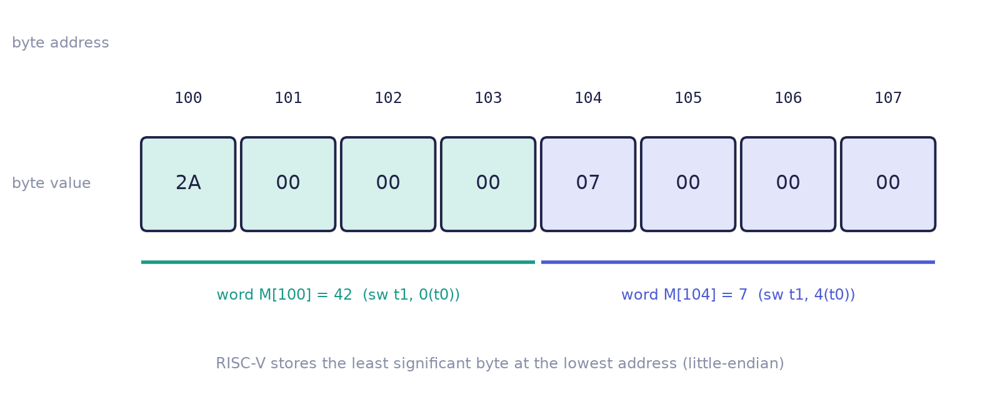
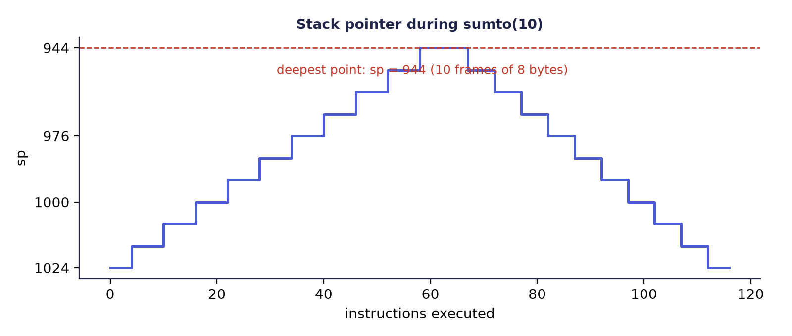

Chapter 9: RISC-V Assembly Programming and Tracing¶
Knowing the formats is not yet knowing the machine. This chapter runs real RISC-V programs, on paper, one instruction at a time. It teaches a method (predict first, then step, and keep a trace table) and applies it to arithmetic and logic, memory, loops, decisions, a Fibonacci calculation, a function call that uses the stack, and a recursive function. By the end you should be able to predict what a short RISC-V program leaves in each register, and the number of instructions it takes to do so, and to find the classic bugs by reading the last row of a trace.
All the programs here are written in RV32I assembly. In the course on which this book is based, they were run in a small simulator that shows the 32 registers, the data memory and the 32 bits of the current instruction, and every result below is the one that simulator produced. The simulator assumes that sp starts at 1024 and that memory is empty; the traces here use the same convention. Any RV32I simulator will do for your own runs.
9.1 Predict, then step¶
The method has four steps.
- Read the next instruction.
- Predict which register changes, and to what value. Say it aloud or write it down.
- Step, that is, carry out the instruction, and compare.
- If you were wrong, find out why before going on. That moment is where the learning happens.
Watching numbers change feels like understanding, but it is not. Only a prediction that can turn out wrong tells you whether you really know what an instruction does. To keep score, use a trace table: one row per step, and one column for each register that matters. Several are filled in below.
9.2 Arithmetic and logic¶
Eight instructions, eight predictions. Suppose t0 = 12 and t1 = 5:
addi t0, zero, 12 # t0 = 12
addi t1, zero, 5 # t1 = 5
add t2, t0, t1 # t2 = ?
sub t3, t0, t1 # t3 = ?
and t4, t0, t1 # t4 = ?
or t5, t0, t1 # t5 = ?
xor t6, t0, t1 # t6 = ?
slli a0, t0, 2 # a0 = ?
Write your six answers down before reading on. The logic instructions work bit by bit, so write the numbers in binary first: \(12 = 1100\) and \(5 = 0101\).
1100 1100 1100
& 0101 | 0101 ^ 0101
---- ---- ----
0100 = 4 1101 = 13 1001 = 9
The rest follow: add gives \(12 + 5 = 17\), sub gives \(12 - 5 = 7\), and slli shifts \(1100\) left by two places, appending two 0 bits, to give \(110000 = 48\), which is multiplication by \(2^2 = 4\).
| Register | t2 |
t3 |
t4 |
t5 |
t6 |
a0 |
|---|---|---|---|---|---|---|
| Value | 17 | 7 | 4 | 13 | 9 | 48 |
9.3 Memory: loads and stores¶
Only two kinds of instruction may touch memory, and they must do it with a register as the base address. RISC-V uses byte addressing: each address names one byte (8 bits). A register holds 32 bits, which is 4 bytes, so a word stored at address 100 fills bytes 100, 101, 102 and 103, and the next word starts at 104, not 101. Arrays of words therefore step by 4, and sw t1, 4(t0) means "the word after the one at t0".
Example 9.1: stores and loads
Predict what ends up in a0, a1 and a2.
addi t0, zero, 100 # base address
addi t1, zero, 42
sw t1, 0(t0) # M[100] = 42
addi t1, zero, 7
sw t1, 4(t0) # M[104] = 7
lw a0, 0(t0) # a0 = M[100]
lw a1, 4(t0) # a1 = M[104]
add a2, a0, a1 # a2 = a0 + a1
t0holds 100, the base address.t1first holds 42.sw t1, 0(t0)copies 42 into the word at address 100.t1is reused: it becomes 7. This does not change memory, because the store copied the value and nothing reaches back.sw t1, 4(t0)copies 7 into the word at address \(100 + 4 = 104\).- The loads read them back:
a0 = 42anda1 = 7. Finallya2 = 42 + 7 = 49.
Figure 9.1 shows what memory holds. RISC-V stores the least significant byte of a word at the lowest address (it is little-endian), so the word 42 (0x2A) puts 2A at address 100 and zeros at 101 to 103.

9.4 Loops and decisions¶
A loop is a counter, an accumulator and a conditional branch back. The program below sums \(1 + 2 + \dots + 10\) and tests at the bottom of the loop.
addi a0, zero, 0 # a0 = 0 (running total)
addi t0, zero, 1 # t0 = 1 (counter i)
addi t1, zero, 11 # t1 = 11 (limit: stop when i == 11)
loop:
add a0, a0, t0 # a0 = a0 + i
addi t0, t0, 1 # i = i + 1
bne t0, t1, loop # if i != 11, go again
Example 9.2: a trace table for 1 + 2 + … + 10
After each pass of the loop (add, addi, bne):
| Pass | t0 (i) after addi |
a0 after add |
bne result |
|---|---|---|---|
| 1 | 2 | 1 | taken (2 ≠ 11) |
| 2 | 3 | 3 | taken |
| 3 | 4 | 6 | taken |
| 4 | 5 | 10 | taken |
| 5 | 6 | 15 | taken |
| ⋮ | ⋮ | ⋮ | ⋮ |
| 9 | 10 | 45 | taken |
| 10 | 11 | 55 | not taken: falls out |
The accumulator after pass \(k\) is \(k(k+1)/2\), and it reaches 55 on pass 10. There are 3 set-up instructions and 10 passes of 3 instructions each, so the program executes \(3 + 10 \times 3 = 33\) instructions.
Testing at the top¶
The same sum can be written with the test at the top of the loop, as many beginners would write it:
addi a0, zero, 0 # sum = 0
addi t0, zero, 1 # i = 1
addi t1, zero, 11 # limit = 11
loop:
beq t0, t1, done # if i == 11, leave
add a0, a0, t0 # sum += i
addi t0, t0, 1 # i++
jal zero, loop # go round again
done:
nop # result is in a0
The trace is the same except that beq is evaluated first, so a table of the values seen at beq is: first t0 = 1, a0 = 0; second t0 = 2, a0 = 1; third t0 = 3, a0 = 3; and so on to the tenth, t0 = 10, a0 = 45; the eleventh test sees t0 = 11, a0 = 55, and leaves.
| Layout | Instructions per pass | Total |
|---|---|---|
| Test at the top | 4 (beq, add, addi, jal) |
\(3 + 10 \times 4 + 1 + 1 = 45\) |
| Test at the bottom | 3 (add, addi, bne) |
\(3 + 10 \times 3 = 33\) |
The first total counts the three set-up instructions, ten passes of four, the last beq that leaves, and the nop. The bottom-test form needs no jump back and runs about a quarter fewer instructions for the same answer. Compilers turn loops "upside down" like this all the time.
The classic loop bug¶
What if the limit register had been loaded with 10 instead of 11?
addi t1, zero, 10 # limit = 10 (the change)
The loop leaves when i reaches 10, before adding 10, so the answer becomes \(1 + 2 + \dots + 9 = 45\), not 55. Stopping one pass too early or too late is an off-by-one error, the commonest loop bug in every language. A trace table catches it: look at the last row.
A decision¶
A high-level if (t0 < t1) a0 = 1; else a0 = 2; becomes a compare-and-branch:
blt t0, t1, then # condition true? jump to the then part
addi a0, zero, 2 # else part
jal zero, done # jump over the then part
then:
addi a0, zero, 1 # then part
done:
The branch jumps when the condition is true. If it falls through, the else part runs and then jumps over the then part. Exactly one of the two addi instructions runs, and every if/else in every language compiles to this shape.
9.5 Fibonacci: two values moving together¶
Each Fibonacci number is the sum of the two before it. The program keeps \(a\) in t0 and \(b\) in t1, two neighbours in the list, and slides them one place along on every pass:
addi t0, zero, 0 # a = 0
addi t1, zero, 1 # b = 1
addi t2, zero, 10 # count = 10
loop:
beq t2, zero, done
add t3, t0, t1 # t3 = a + b
add t0, zero, t1 # a = b
add t1, zero, t3 # b = a + b
addi t2, t2, -1 # count down
jal zero, loop
done:
add a0, zero, t0 # result in a0
t3 is a temporary: without it, the new b would overwrite the old one before it could be copied into a.
Example 9.3: trace of the Fibonacci loop
The table shows the registers when beq is evaluated, at the start of each pass.
| Test | t2 (count) |
t0 (a) |
t1 (b) |
|---|---|---|---|
| start | 10 | 0 | 1 |
| after pass 1 | 9 | 1 | 1 |
| after pass 2 | 8 | 1 | 2 |
| after pass 3 | 7 | 2 | 3 |
| after pass 4 | 6 | 3 | 5 |
| after pass 5 | 5 | 5 | 8 |
| after pass 6 | 4 | 8 | 13 |
| after pass 7 | 3 | 13 | 21 |
| after pass 8 | 2 | 21 | 34 |
| after pass 9 | 1 | 34 | 55 |
| after pass 10 | 0 | 55 | 89 |
When t2 reaches 0, beq jumps to done, and a0 = t0 = 55, the tenth Fibonacci number (\(F_{10} = 55\), with \(F_0 = 0\) and \(F_1 = 1\)). The instruction count is 3 for set-up, 6 per pass for ten passes, the final beq and the closing add: \(3 + 6 \times 10 + 1 + 1 = 65\).
9.6 Function calls and the stack¶
jal jumps to a routine and records the return address, the address of the instruction after the jal, in ra; ret jumps back through ra. The stack is a region of memory used to save values during calls. It grows downwards, and sp always points at its top. To push, subtract from sp and then store; to pop, load and then add back. A function must leave sp exactly where it found it before it returns.
main:
addi a0, zero, 5 # argument: a0 = 5
jal ra, double # call; ra = return address
jal zero, end # (afterwards a0 holds 10)
double: # int double(int x) { return x + x; }
addi sp, sp, -4 # make room on the stack
sw ra, 0(sp) # save the return address
add a0, a0, a0 # a0 = x + x
lw ra, 0(sp) # get it back
addi sp, sp, 4 # give the room back
ret # jump back through ra
end:
nop
Example 9.4: following ra and sp through the call
The instructions are at addresses 0 (addi a0), 4 (jal ra), 8 (jal zero), and double starts at 12. Each row shows the registers after the instruction.
| Step | Instruction | a0 |
ra |
sp |
Memory |
|---|---|---|---|---|---|
| 1 | addi a0, zero, 5 |
5 | 0 | 1024 | |
| 2 | jal ra, double |
5 | 8 | 1024 | |
| 3 | addi sp, sp, -4 |
5 | 8 | 1020 | |
| 4 | sw ra, 0(sp) |
5 | 8 | 1020 | M[1020] = 8 |
| 5 | add a0, a0, a0 |
10 | 8 | 1020 | M[1020] = 8 |
| 6 | lw ra, 0(sp) |
10 | 8 | 1020 | M[1020] = 8 |
| 7 | addi sp, sp, 4 |
10 | 8 | 1024 | M[1020] = 8 |
| 8 | ret |
10 | 8 | 1024 | the PC jumps to 8 |
ra = 8 because the jal is at address 4, and the return address is the instruction after it. sp ends exactly where it started, and a0 holds the result, 10.
Why save ra at all?¶
This double calls no one, so it could skip the stack entirely: such a function is called a leaf. But suppose double itself called another function with jal ra, .... That would overwrite ra, and the way back to main would be lost. Saving ra on the stack before the call and restoring it before ret makes calls inside calls safe, however deep they go. Think of breadcrumbs: each call drops a crumb (the return address) on a pile, and each return picks up the top one. The pile is the stack.
Recursion¶
A recursive function makes the stack visible. We compute \(\text{sumto}(n) = n + \text{sumto}(n-1)\) with \(\text{sumto}(0) = 0\). Each call that does not stop pushes two words, the return address and \(n\) (8 bytes), calls itself with \(n - 1\), then pops them and adds.
main:
addi a0, zero, 10 # n = 10
jal ra, sumto
jal zero, end # afterwards a0 = 55
sumto: # a0 = n on entry, result in a0
beq a0, zero, base # n == 0: return 0 (a0 is already 0)
addi sp, sp, -8 # push a frame of two words
sw ra, 4(sp) # save the return address
sw a0, 0(sp) # save n
addi a0, a0, -1 # argument n - 1
jal ra, sumto # recursive call: a0 = sumto(n - 1)
lw t0, 0(sp) # restore n
lw ra, 4(sp) # restore the return address
addi sp, sp, 8 # pop the frame
add a0, a0, t0 # result = sumto(n - 1) + n
ret
base:
ret
end:
nop
The base case returns at once, without touching the stack. Every other call pushes one 8-byte frame, and there are ten of them in the deepest chain (\(n = 10\) down to \(n = 1\)), so the deepest value of sp is \(1024 - 10 \times 8 = 944\) (Figure 9.2). Each frame holds the saved \(n\) and the return address: the frame of \(n = 10\) holds the return address 8 (back into main), and every other frame holds 36, the address of the lw after the recursive jal. After the last return, sp is back at 1024 and a0 = 55.

9.7 Summary¶
- Predict, then step. Only a prediction that can be wrong proves understanding. A trace table keeps the score; always read its last row.
- The logic instructions work bit by bit, and a left shift by \(n\) multiplies by \(2^n\).
- Memory is byte-addressed: words are 4 bytes, so successive word addresses go up in 4s. A store copies a value; changing the register afterwards does not change memory.
- A loop tested at the bottom saves a jump on every pass: 33 instructions instead of 45 for the same sum. An off-by-one error appears in the last row of the trace.
jalputs the return address inra; the stack saves values across nested calls;spmust come back to where it began.- Instruction counts depend on how a loop is written, so state the layout when you quote a count.
9.8 Exercises¶
Exercise 9.1 (the larger of two numbers). With t0 = 23 and t1 = 41, which add runs and how many instructions run in total?
addi t0, zero, 23
addi t1, zero, 41
blt t0, t1, second
add a0, zero, t0 # first is the larger
jal zero, done
second:
add a0, zero, t1 # second is the larger
done:
nop
Then swap the values; then change one instruction so that a0 receives the smaller value.
Answer
\(23 < 41\), so blt jumps to second, and a0 = 41. The instructions executed are addi, addi, blt, add (at second) and nop: 5 in all. With t0 = 41 and t1 = 23, blt falls through, add a0, zero, t0 runs, then jal jumps over second, then nop: a0 = 41 again, in 6 instructions. To obtain the smaller value, change blt to bge: now second is entered when \(t0 \ge t1\), and the fall-through path is the one for \(t0 < t1\), so a0 receives the smaller.
Exercise 9.2 (read machine code back). A memory dump shows the word 0x00A00513. What instruction is it?
Answer
Write it as 32 bits: 000000001010 00000 000 01010 0010011. The opcode 0010011 is I-type arithmetic, with funct3 = 000, which is addi; rs1 = x0 = zero, rd = x10 = a0, and the immediate is 10. The instruction is addi a0, zero, 10, also written li a0, 10.
Exercise 9.3. A program stores three words with sw, starting at address 200. At which addresses do the second and third words start? And after any correct function call returns, what must sp be?
Answer
Words are 4 bytes apart in a byte-addressed memory, so the second word starts at 204 and the third at 208. After a correct call returns, sp must be exactly the value it had before the call: every push is matched by a pop, so the caller finds the stack as it left it.
Exercise 9.4 (four small programs). Write each in RV32I assembly, ending with nop, predict the result and the number of instructions executed, then check by tracing: (a) the sum \(1 + \dots + 100\) in a0, testing at the bottom of the loop; (b) \(7 \times 6\) by repeated addition (RV32I has no multiply instruction); (c) the number of 1 bits in 0xB5, using andi and srli; (d) the largest of 17, 42 and 30, using bge.
Answer
(a) Change the limit register of Section 9.4 to 101: a0 = 5050, and \(3 + 100 \times 3 = 303\) instructions with the bottom test.
(b) Add 7 to the accumulator six times:
addi a0, zero, 0
addi t0, zero, 7
addi t1, zero, 6 # counter
loop:
beq t1, zero, done
add a0, a0, t0
addi t1, t1, -1
jal zero, loop
done:
nop
The results are a0 = 42; the count is \(3 + 6 \times 4 + 1 + 1 = 29\) instructions.
(c) \(\text{0xB5} = 1011\,0101\), which has five 1 bits:
addi t0, zero, 0xB5
addi a0, zero, 0
loop:
beq t0, zero, done
andi t1, t0, 1 # lowest bit
add a0, a0, t1 # add it to the count
srli t0, t0, 1 # shift the next bit down
jal zero, loop
done:
nop
The result is a0 = 5. The loop runs eight times (while t0 takes the values 181, 90, 45, 22, 11, 5, 2, 1), so there are \(2 + 8 \times 5 + 1 + 1 = 44\) instructions.
(d) Keep the largest so far in a0:
addi t0, zero, 17
addi t1, zero, 42
addi t2, zero, 30
add a0, zero, t0
bge a0, t1, s1 # keep a0 if it is already >= t1
add a0, zero, t1
s1:
bge a0, t2, s2
add a0, zero, t2
s2:
nop
The result is a0 = 42; the first bge falls through (17 < 42) and the second jumps (42 ≥ 30), so 8 instructions run. In every case the counts depend on how the loops are written.
Exercise 9.5 (a recursive function and the stack). Write \(\text{sumto}(n) = n + \text{sumto}(n-1)\), \(\text{sumto}(0) = 0\), as a real recursive function, call it from main with \(n = 10\), and record the deepest value of sp. What must the program print for a0 and the final sp?
Answer
The program is the one in Section 9.6. Each of the ten nested calls pushes a frame of 8 bytes (the return address and \(n\)), so the deepest sp is \(1024 - 80 = 944\). The result is a0 = 55, and sp returns to 1024. A trace of the stack at the deepest point (from the top of the stack downwards) holds, for the frame of \(n = 10\), the return address 8 at 1020 and \(n = 10\) at 1016; for \(n = 9\), the return address 36 at 1012 and 9 at 1008; and so on down to \(n = 1\), with 36 at 948 and 1 at 944.
Exercise 9.6. In Example 9.4, why does the program survive if double is changed to call another function helper (so that jal ra, helper appears inside it), provided it saves ra first? What would happen if it did not?
Answer
The call to helper overwrites ra with the address of the instruction after that second jal. Because double saved the original ra (the way back to main) on the stack beforehand, it can reload it with lw ra, 0(sp) just before ret, and the return goes to the right place. Without the save, ret would jump to the instruction inside double that follows the call to helper, not to main; the way back to the caller would be lost and the program would misbehave.